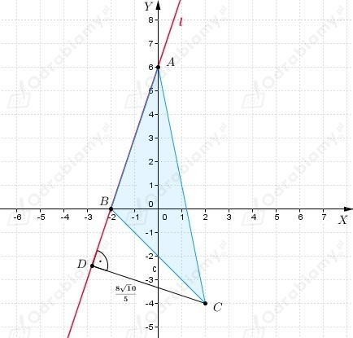
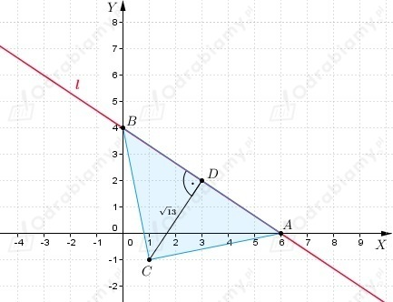
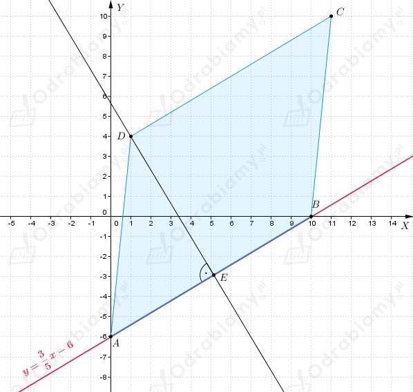

| Przypomnijmy, że odległość punktu P(x0, y0) od prostej l o równaniu ogólnym
wyraża się za pomocą wzoru
|
a)
Z treści zadania wiemy, że
Należy obliczyć odległość powyższych punktów od prostej
Zapiszmy równanie prostej l w postaci ogólnej
Zatem obliczmy odległość punktu
b)
Z treści zadania wiemy, że
Należy obliczyć odległość powyższych punktów od prostej
Zatem obliczmy odległość punktu
c)
Z treści zadania wiemy, że
Należy obliczyć odległość powyższych punktów od prostej
Zapiszmy równanie prostej l w postaci ogólnej
Zatem obliczmy odległość punktu
a)
Z treści zadania wiemy, że
Zapiszmy równanie prostej w postaci ogólnej
Obliczmy odległość punktu C od prostej l
Wyznaczmy współrzędne punktu przecięcia prostej l z osią OX (y=0)
Zatem punkt przecięcia prostej l z osią OX ma współrzędne
Wyznaczmy współrzędne punktu przecięcia prostej l z osią OY (x=0)
Zatem punkt przecięcia prostej l z osią OY ma współrzędne
Naszkicujmy otrzymane wartości w układzie współrzędnych.

Zauważamy, że odcinek DC, który jest równy odległości punktu C od prostej l jest wysokością trójkąta ABC.
Zatem należy obliczyć długość podstawy AB trójkąta, aby móc obliczyć jego pole.
Obliczmy pole trójkąta ABC.
b)
Z treści zadania wiemy, że
Zapiszmy równanie prostej w postaci ogólnej
Obliczmy odległość punktu C od prostej l
Wyznaczmy współrzędne punktu przecięcia prostej l z osią OX (y=0)
Zatem punkt przecięcia prostej l z osią OX ma współrzędne
Wyznaczmy współrzędne punktu przecięcia prostej l z osią OY (x=0)
Zatem punkt przecięcia prostej l z osią OY ma współrzędne
Naszkicujmy otrzymane wartości w układzie współrzędnych.

Zauważamy, że odcinek DC, który jest równy odległości punktu C od prostej l jest wysokością trójkąta ABC.
Zatem należy obliczyć długość podstawy AB trójkąta, aby móc obliczyć jego pole.
Obliczmy pole trójkąta ABC.
Wyznaczmy współrzędne punktów A i B, czyli punktów przecięcia prostej o równaniu
z osiami układu współrzędnych.
Wyznaczmy punkt przecięcia prostej z osią OX.
Wyznaczmy punkt przecięcia prostej z osią OY.
Z treści zadania wiemy, że D(1, 4).
Spójrzmy na rysunek

Zauważmy, że z wierzchołka D możemy poprowadzić wysokość równoległoboku ABCD.
Zatem wysokość możemy wyznaczyć obliczając odległość punktu D od prostej y=3/5x-6.
Zapiszmy wzór prostej w postaci ogólnej.
Obliczmy długość podstawy AB równoległoboku.
Obliczmy pole równoległoboku